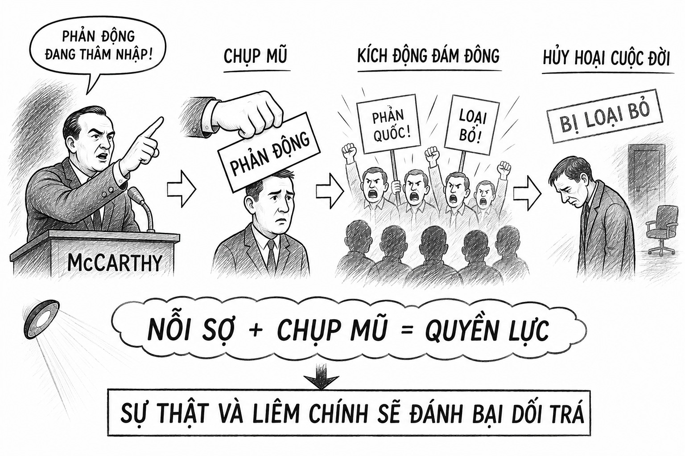

Thao túng đám đông ngu dốt - chiếc mũ mang tên phản động

"Ngài không có chút liêm sỉ nào ư?"
Joseph McCarthy là một thượng nghị sĩ Mỹ, nổi lên đầu thập niên 1950 nhờ khai thác nỗi sợ cộng sản trong xã hội Hoa Kỳ. Năm 1950, ông tuyên bố có trong tay danh sách hàng chục viên chức Bộ Ngoại giao là đảng viên cộng sản. Dù không đưa ra bằng chứng rõ ràng, lời cáo buộc này đánh trúng tâm lý lo sợ trong bối cảnh Chiến tranh Lạnh, khi Liên Xô thử thành công bom nguyên tử. McCarthy nhanh chóng trở thành biểu tượng của “cuộc săn lùng cộng sản” ở Washington.
Ông sử dụng nhiều thủ đoạn truyền thông như: Mập mờ bằng chứng: luôn nói có “danh sách” nhưng không công bố, khiến dư luận hoang mang. Đánh vào nỗi sợ tập thể: gieo ý nghĩ rằng cộng sản đã thâm nhập chính phủ, quân đội, Hollywood. Tấn công công khai: dùng các phiên điều trần để bêu tên, khiến người bị cáo buộc khó tự vệ. Tạo không khí khẩn cấp: khẳng định nước Mỹ đang ở “bờ vực bị phá hoại từ bên trong”, buộc công chúng phải chú ý.
Nhờ đó, McCarthy có thể làm sự nghiệp của nhiều người sụp đổ, thậm chí mất mạng chỉ bằng một lời cáo buộc mơ hồ. Rất nhiều nhà khoa học có thiện cảm với cánh tả, trong đó có vợ chồng Rosenberg, bị kết tội tử hình vì những lý do vu vơ. Nhà vật lý lý thuyết-triết gia trẻ tài năng, được Einstein yêu mến, cũng được Oppenheimer, báo động tạo điều kiện đi dự hội nghị ở Brasil và không trở lại nước Mỹ để tránh bị bắt vì các quan điểm thiên tả công khai. Các chính trị gia đều ngại và sợ McCarthy, điều đó tạo cho ông một quyền lực ghê gớm, trở thành một thế lực ngoài chính phủ, có thể chụp mũ để gây áp lực đưa ra tòa bất cứ ai.
Nhưng đến năm 1954, ông đã phạm sai lầm khi mở rộng điều tra ra toàn xã hội, nhiều khả năng là do tham vọng quyền lực và thành công làm ông mờ mắt. Các phiên điều trần được truyền hình trực tiếp cho thấy cách ông công kích thô bạo, thiếu bằng chứng. Hình ảnh McCarthy từ “người bảo vệ nước Mỹ” chuyển thành “kẻ săn phù thủy”. Khoảnh khắc mang tính bước ngoặt là khi luật sư Joseph Welch phản bác ông bằng câu nó đơn giản: “Have you no sense of decency, sir?” (Ngài không có một chút liêm sỉ nào ư?)– được hàng triệu khán giả chứng kiến và làm nước Mỹ thức tỉnh về bộ mặt thật của McCarthy. Uy tín McCarthy sụp đổ, và cuối năm 1954 Thượng viện chính thức khiển trách ông. Từ đó, ông mất ảnh hưởng, bị cô lập và qua đời năm 1957, trong cô đơn và sự khinh bỉ của xã hội.
Câu chuyện McCarthy cho thấy: Nỗi sợ tập thể có thể bị khai thác để tạo quyền lực ngoài chính quyền nhanh chóng. Thông tin mập mờ có thể gây chú ý, nhưng dễ mất uy tín nếu không có bằng chứng. Công khai trước công luận có sức mạnh phá hủy hình ảnh cá nhân hoặc tổ chức. Giới hạn của thủ đoạn: công kích và gieo sợ hãi chỉ hiệu quả ngắn hạn, về lâu dài công chúng đòi hỏi minh bạch. Công chúng có thể bị lung lạc tập thể những họ sẽ nhanh nhận ra vấn đề nhờ những câu hỏi đơn giản cũng là điểm yếu chí tử của những kẻ lung lạc công luận: "liêm chính", "lòng trắc ẩn" và "nhân ái", là những điểm họ không thể có.
Kết luận: McCarthy nổi lên nhờ khai thác nỗi sợ và sự mập mờ thông tin, nhưng chính những thủ đoạn ấy đã khiến ông sụp đổ khi công luận chứng kiến sự thiếu liêm chính. Bài học cho truyền thông hiện đại là: nỗi sợ và công kích có thể tạo hiệu ứng nhanh, nhưng chỉ sự minh bạch và liêm chính mới duy trì được niềm tin lâu dài.